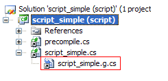
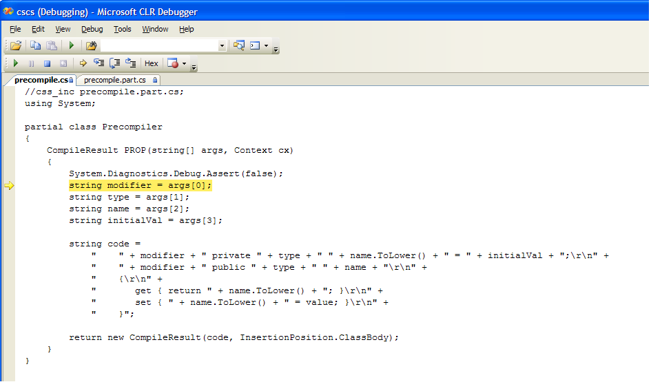

Background
Dynamic
Code Generation (DCG) is the ability of a runtime or
a development framework to automatically generate and update
the source code before compilation/execution. DCG is used to produce business logic
independent code fragments. On a contrary to the code generating wizards,
which are one-off activities, DCG ensures that produced code is
consistent with the runtime environment by re-emitting the fresh version of a code on every compilation/execution.
DCG, in one or another form,
is part of many development platforms. Macros, importing type
libraries, and compilation of IDL files are all examples of DCG
available in C++. In some cases DCG is handled by a language compiler
(e.g. macros) and others some external utilities are responsible for
the actual code generation. But there are a few aspects that are
common for all DCG cases. One of these aspects is that DCG is used for
automatic generation of the source code, based on some very strict
rules/instructions (e.g. macro definition). Another commonality is
that DCG allows to avoid polluting the source code with extensive,
repetitive routines, which dramatically decrease code readability and
maintainability.
Dynamic Code Generation in CS-Script
From the very
early versions, CS-Script was capable of dynamically generating
dependency assemblies. The typical example is the callable wrappers for COM
server(s) during execution of scripts accessing the server at
the runtime (
Using COM).
The technique described in this
section is based on the Pre-/Post-execution scripts. However the latest
edition of CS-Script has native support for a specialized light weight
type of pre-execution scripts - "Precomilers". Precompiler in most of
the cases can offer a simpler and more maintainable solution for DCG
comparing to the full scale pre-execution scripts. Thus you may want to
read the Precompilers chapter as well.
The ability of generating runtime components
just before the execution is a simple and yet very powerful/flexible concept.
Particularly because the component, responsible for such code generation,
is a script too. Such code emitting scripts can be set up with a
//css_prescript directive (
Pre- and Post-execution scripts). In case of generating COM
callable wrappers,
//css_prescript launches the
com.cs script, which simply
runs
TlbImp.exe (part of .NET Framework) in order to produce the
required assembly. The truth is that it does not have to be an assembly,
it can also be the plain C# code. The execution under CS-Script has this
"luxury" of consuming non-compiled C# code. Thus the auto-generated code can
be a part of the main script codebase.
A very similar approach is
used by
MSBuild.exe, which takes
xaml file and generates the missing C#
code prior to compilation of the WPF application. The difference with
CS-Script is that you have full control over how the C# code is
generated.
Below is a
generator.cs script, which generates the code required for the script
test.cs to run:
using System;
using System.IO;
class Script
{
static public void Main()
{
using (StreamWriter sw = new StreamWriter(@"C:\test.part.cs"))
sw.Write(
@"using System;
partial class Test
{
static void SayHello()
{
Console.WriteLine(""Hello"");
}
}");
}
} |
And this is the
test.cs script, which utilises the auto-generated
test.part.cs file:
//css_prescript generator();
//css_include C:\test.part.cs;
using System;
partial class Test
{
static public void Main()
{
SayHello();
}
} |
The
example above is very simple and not particularly useful. However, it
demonstrates a potential, which can be used to achieve simple
maintenance even for the very complex code modules.
C++ style macros in CS-Script
The ability to generate code
dynamically, described in the section above, is the basis for C++ style macros support available
in CS-Script begining from v2.1.0.
C++
macros is a technique for reducing the amount of code by automatically
generating some of its fragments just before passing it on to the
compiler. This very powerful technique despite some obvious
advantages, is commonly recognised as a frequent cause of programming
mistakes. The problem is that macros are nothing else but a "textual
substitution" and as such it can lead to the unpredictable code:
#define NORMALIZE(x) ((x == 0) ? 0 : (x > 0) ? 1 : -1)
int OpenFile()
{
printf("opening file...\n");
return 1;
}
int _tmain(int argc, _TCHAR* argv[])
{
int i = 1;
int result = NORMALIZE(i);
result = NORMALIZE(OpenFile()); //OpenFile() called twice
return 0;
}
|
The NORMALIZE macro will work fine with the variable
i but if you apply it to
OpenFile you will notice that
OpenFile will be called twice.
This is because the produced code by expending the macro will contain
a call to
OpenFile() twice.
Another problem is that the code with expended macros, which is
passed to the compiler, is not visible to the developer.
Thus, he/she can not possibly know what code the compiler is
actually compiling.
Because of these limitations, C++ macros did not make
it into C#. CS-Script DCG however offers some opportunities for
achieving a macros-like functionality but without limitations
typical for C++ macros.
The best way to describe the CS-Script macros is to do it by example.
Imagine
that you need to define a macro for generating a class property. If C++
macros were available in C#, this could be accomplished as follows:
#define DEFINE PROP(arg1, arg2, arg3, arg4) \
arg1 public arg2 arg3 \
{ \
get { return m_##arg3; } \
set { m_##arg3 = value; } \
} \
arg1 private arg2 m_##arg3 = arg4; |
And this is how the macro would be used:
class MyData
{
PROP(static, string, Description, "MyData class")
} |
The code above would be interpreted by the compiler as follows:
class MyData
{
static public bool Description
{
get { return m_Description; }
set { m_Description = value; }
}
static private string m_Description = "MyData class";
} |
C#
does not support macros thus the scenario described above is not possible in
raw C#. However, a very similar outcome can be achieved in CS-Script.
This is a fragment of the code from
script_simple.cs using C# script macros:
partial class MyData
{
/* css_extend_class MyData
PROP(static, string, Description, "MyData class")
*/
}
|
And this is how to define the way the macro and its arguments should be expended (
precompile.cs) by the macro expending routine:
CompileResult PROP(string[] args, Context cx)
{
string modifier = args[0];
string type = args[1];
string name = args[2];
string initialVal = args[3];
string code =
" " + modifier + " private " + type + " " + name.ToLower() + " = " + initialVal + ";\r\n" +
" " + modifier + " public " + type + " " + name + "\r\n" +
" {\r\n" +
" get { return " + name.ToLower() + "; }\r\n" +
" set { " + name.ToLower() + " = value; }\r\n" +
" }";
return new CompileResult(code, InsertionPosition.ClassBody);
}
|
The
important point in this example is that CS-Script ensures
that the PROP macro is expended into the C# code just before the
compilation/execution and this auto-generated C# code is written into
the
file, which can be examined by the developer. Thus, there is no
question what is going into the C# compiler. If you open your
script in
Visual Studio, you will notice that the auto-generated code (
script_simple.g.cs) is included into the Visual Studio project.

The macros expansion is nothing else but a string
manipulation routine. This routine is invoked for you by the CS-Script
engine just before passing the code on to the C# compiler. This routine is
under your full control. You can change it, define the new one or you can
even debug it if you want to see in details how the macro is expended.
You can start debugging the macros from the same IDE where your
primary script is loaded. CS-Script comes with
CS-Script Visual Studio toolbar, which has a
Precompile button for launching the macro expending routine under the debugger.

Because the macro expending routine is an ordinary C# code you can
also benefit from all coding assistance tools available
in Visual Studio (e.g. intellisense ). As you can see the CS-Script macros
do not have any flaws typical for their C++ equivalent.
You
may have noticed that the macro has been used in the code as a comment.
This is because
the C# compiler is still unfamiliar with a PROP code token, therefore the
compiler will not
compile this token unless it is disguised as a comment. You
may have also noticed that the macro is surrounded by a comment
block with a start marker
"css_extend_class MyData". This marker allows the CS-Script engine to
distinguish between ordinary comments and CS-Script macros.
Note
that in the single macros comment block you may have as many macros as
you wish as long the single macro occupies the single line.
The
most important aspect of CS-Script macros support is that, as
a concept, it is not a built-in functionality of the script engine
but a special macros processing script (
Lib\precompile.part.cs)
and as such it is completely open for any modifications. This is
something that is entirely impossible for C++ macros. The scripting
nature of macros processing makes it possible to bring C# macros even to
the non-scripting environments. e.g. a project created when you
open the script containing macros in Visual Studio. While you are
editing, compiling or debugging your code under IDE it is just an
ordinary C# VS project and yet it supports the concept of macros.
The earlier code sample demonstrated how to define a single macro PROP.
The CS-Script standard installation comes with a more
comprehensive example of macros usage (
Samples\Macros\script.cs). This sample script contains the following macros examples:
NEW
Defines a static instantiation method New() to mimic the Ruby style type instantiation.
PROP
Defines a class property with a default value.
definition:
partial class MyData
{
/* css_extend_class MyData
NEW()
PROP(static, bool, Direction, false)
PROP(, string, Text, "test")
*/
public override string ToString()
{
return Direction + ", " + Text;
}
}
usage:
Console.WriteLine(MyData.New().ToString()) |
VALUE
Defines the
Enum value. The special aspect of the
Enum declaration is that it is
String Enumeration.
String Enumeration is a concept (not available in C#), which many developers had tried to implement (e.g. this
CodeProject article). CS-Script macros allow to accomplish this task in a quite simple way.
definition:
/* css_extend_str_enum public Numbers
VALUE(One, "One unit")
VALUE(Two, "Two units")
VALUE(Tree, "Three units")
*/
usage:
foreach (Numbers num in Enum.GetValues(typeof(Numbers)))
Console.WriteLine(num.ToString() + " - " + num.ToStringEx());
output:
One - One unit
Two - Two units
Tree - Three units
|
Conclusion
CS-Script macros is only one of the possible DCG applications. The
dynamic
code can be generated not only on the basis of instructions extracted
from the source code (e.g. macros). These instructions can also be
obtained from another file (e.g. XML file), database schema, runtime
environment state, state of the files system etc.. But this particular DCG implementation (macros) can deliver
dramatic improvements to the code maintainability. This is a practical
example of the difference that can be make by defining the
Dependency
Properties as macros in a WWF activity class:
with macros:
public partial class Init : Activity
{
/* css_extend_class Init
DEPENDENCY_PROP(string, AxisId)
DEPENDENCY_PROP(string, Port, Parameters)
DEPENDENCY_PROP(string, Prefix, Parameters)
DEPENDENCY_PROP(int, Address, Parameters)
DEPENDENCY_PROP(int, HalfstepExponent, Parameters)
*/
....
without macros:
partial class Init
{
[System.ComponentModel.CategoryAttribute("Misc")]
[System.ComponentModel.BrowsableAttribute(true)]
[DesignerSerializationVisibility(DesignerSerializationVisibility.Visible)]
static public DependencyProperty AxisIdProperty;
public String AxisId
{
get { return Convert.ToString(base.GetValue(AxisIdProperty)); }
set { base.SetValue(AxisIdProperty, value); }
}
[System.ComponentModel.CategoryAttribute("Parameters")]
[System.ComponentModel.BrowsableAttribute(true)]
[DesignerSerializationVisibility(DesignerSerializationVisibility.Visible)]
static public DependencyProperty PortProperty;
public String Port
{
get { return Convert.ToString(base.GetValue(PortProperty)); }
set { base.SetValue(PortProperty, value); }
}
[System.ComponentModel.CategoryAttribute("Parameters")]
[System.ComponentModel.BrowsableAttribute(true)]
[DesignerSerializationVisibility(DesignerSerializationVisibility.Visible)]
static public DependencyProperty PrefixProperty;
public String Prefix
{
get { return Convert.ToString(base.GetValue(PrefixProperty)); }
set { base.SetValue(PrefixProperty, value); }
}
[System.ComponentModel.CategoryAttribute("Parameters")]
[System.ComponentModel.BrowsableAttribute(true)]
[DesignerSerializationVisibility(DesignerSerializationVisibility.Visible)]
static public DependencyProperty AddressProperty;
public Int32 Address
{
get { return Convert.ToInt32(base.GetValue(AddressProperty)); }
set { base.SetValue(AddressProperty, value); }
}
&nbhttp://www.csscript.net/ 200 6130 334
2013-11-30 04:41:26 W3SVC3093898 GET /downloadbtn.gif - 80 113.161.71.129 Mozilla/5.0+(Windows+NT+6.1)+AppleWebKit/537.36+(KHTML,+like+Gecko)+Chrome/31.0.1650.57+Safari/537.36 http://www.csscript.net/ 200 1147 339
2013-11-30 04:41:26 W3SVC3093898 GET /new.png - 80 113.161.71.129 Mozilla/5.0+(Windows+NT+6.1)+AppleWebKit/537.36+(KHTML,+like+Gecko)+Chrome/31.0.1650.57+Safari/537.36 http://www.csscript.net/ 200 7792 331
2013-11-30 04:41:26 W3SVC3093898 GET /Images/scriptInNP.PNG - 80 113.161.71.129 Mozilla/5.0+(Windows+NT+6.1)+AppleWebKit/537.36+(KHTML,+like+Gecko)+Chrome/31.0.1650.57+Safari/537.36 http://www.csscript.net/ 200 20232 345
2013-11-30 04:41:26 W3SVC3093898 GET /main.count.aspx - 80 113.161.71.129 Mozilla/5.0+(Windows+NT+6.1)+AppleWebKit/537.36+(KHTML,+like+Gecko)+Chrome/31.0.1650.57+Safari/537.36 http://www.csscript.net/ 200 1426 339
2013-11-30 04:41:26 W3SVC3093898 GET /Images/menu.png - 80 113.161.71.129 Mozilla/5.0+(Windows+NT+6.1)+AppleWebKit/537.36+(KHTML,+like+Gecko)+Chrome/31.0.1650.57+Safari/537.36 http://www.csscript.net/ 200 2855 339
2013-11-30 04:41:27 W3SVC3093898 GET /favicon.ico - 80 113.161.71.129 Mozilla/5.0+(Windows+NT+6.1)+AppleWebKit/537.36+(KHTML,+like+Gecko)+Chrome/31.0.1650.57+Saf |